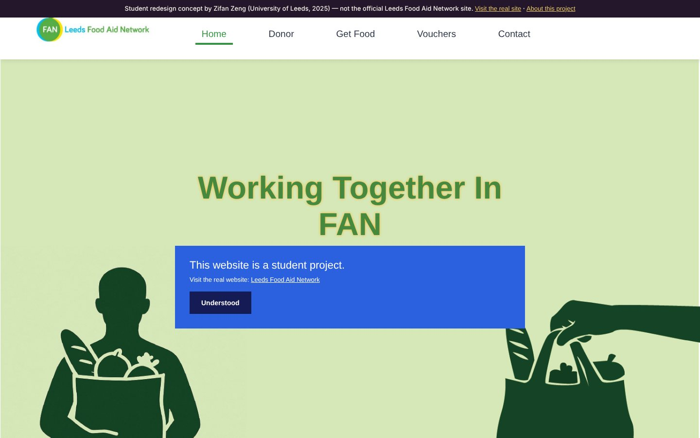
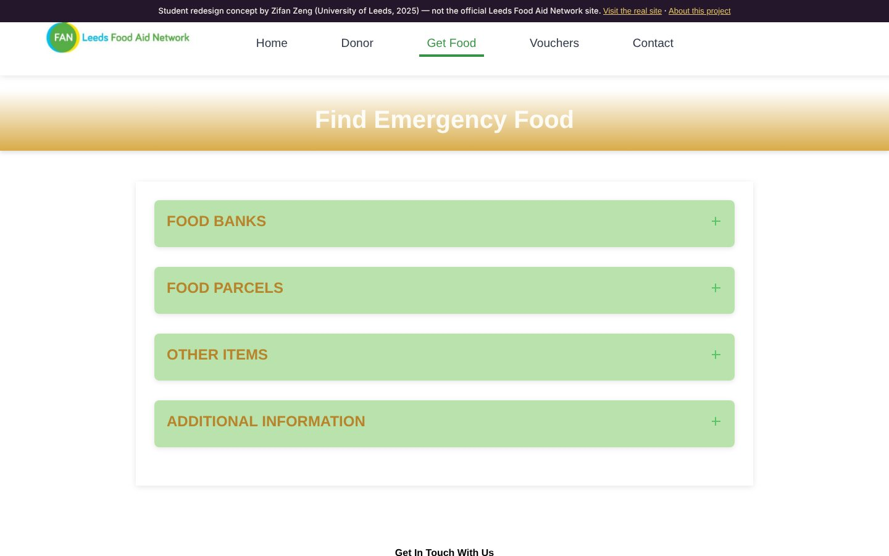
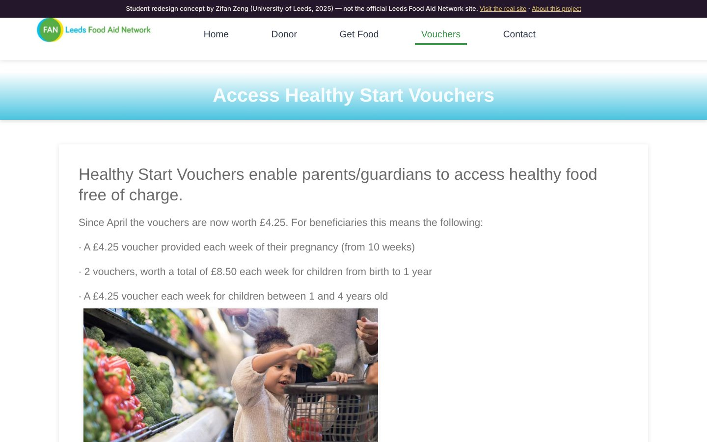
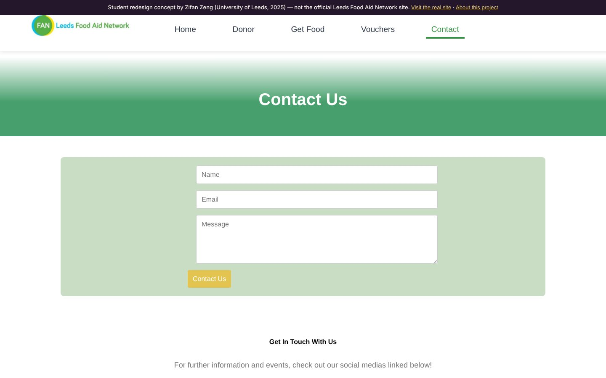

Leeds Food Aid Network
When someone needs emergency food, how many clicks should it take to find it?

Homepage of the redesign. A student concept, not the official Leeds Food Aid Network website.
01The evaluation
Leeds Food Aid Network coordinates food banks, food parcels and support across the city. Its website serves three very different people: someone looking for help, a donor, and a volunteer. I evaluated it with Nielsen's heuristics and Krug's five-second and trunk tests, ran task-based tests with users from each group, and audited the code against WCAG 2.1 and the W3C validators.
02What I found
- Navigation
The main menu was hidden behind an icon and unreachable by keyboard, and labels like “Resource Centre” hid the donation route. Testers described the first impression as “messy”.
- Trust
Dropped into a deep page, users could not tell whose site it was or what it was for.
- Accessibility
Images without alt text, low-contrast text, no skip link, and a map that keyboard and screen-reader users could not operate.
- Code
Duplicate IDs, unclosed and invalidly nested tags, and a map layout whose icons overlapped at smaller widths.
03The redesign




A persistent top navigation with plain labels and a skip link, hand-coded in HTML, CSS and JavaScript. Forms in this copy do not send anything.